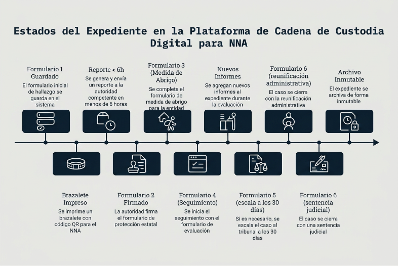
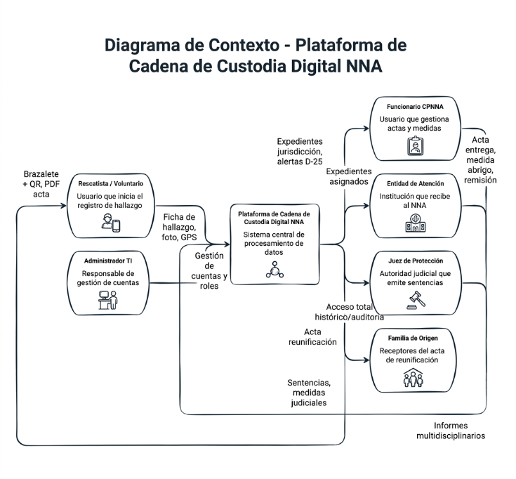
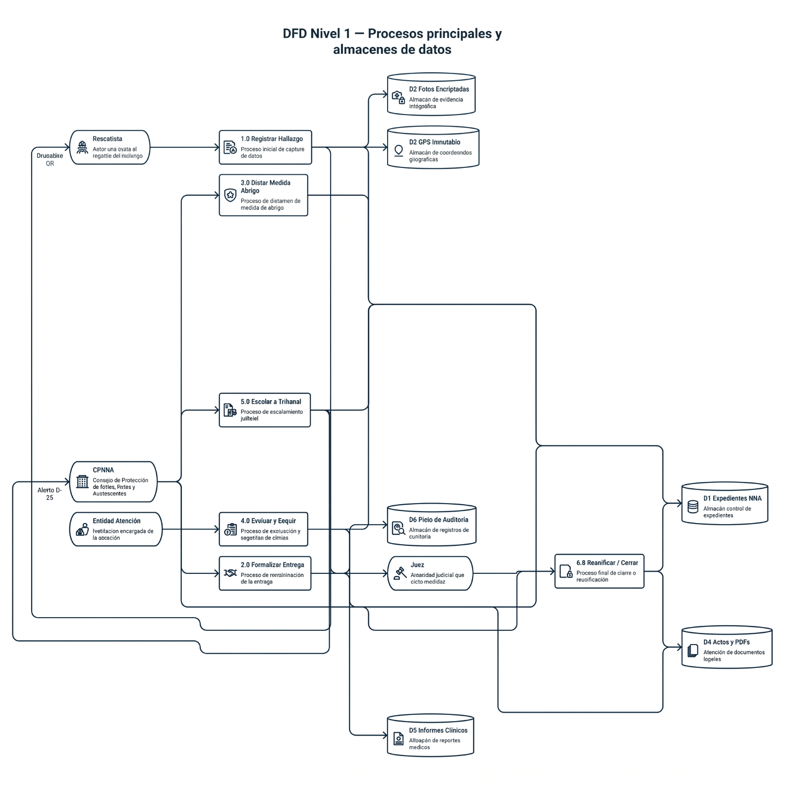

ESPECIFICACIÓN DE REQUERIMIENTOS DE SOFTWARE (ERS)
| Atributo |
Valor |
| Documento |
Requerimientos detallados de captura de datos |
| Versión |
1.0 (Consolidado a partir de Especificaciones V3.0) |
| Fecha |
27/06/2026 |
| Marco legal rector |
LOPNNA (Ley Orgánica para la Protección de Niños, Niñas y Adolescentes) |
| Ámbito |
Trazabilidad de NNA rescatados en desastres sísmicos — registro, custodia, abrigo, seguimiento, escalamiento judicial y reunificación |
| Estándar de referencia |
IEEE 830 / ISO-IEC-IEEE 29148 |
| Autores |
Jose Carlos Chacon, Luis Eduardo Chacon, Alexander Moreno |
1. INTRODUCCIÓN
1.1. Propósito
Este documento especifica, de forma detallada y verificable, los requerimientos de captura de datos de la plataforma. Define para cada formulario: campos, tipos de dato, reglas de validación, reglas de negocio, controles legales y comportamiento de interfaz. Sirve de contrato funcional entre las áreas legal/operativa y el equipo de desarrollo.
1.2. Alcance
El módulo cubre el ciclo de vida completo (lifecycle) del expediente digital de un NNA, desde el hallazgo en zona cero hasta el cierre del caso (reunificación, colocación o adopción), a través de seis (6) formularios encadenados que conectan a Rescatistas, CPNNA, Entidades de Atención, Jueces y la familia de origen.
1.3. Definiciones clave
- NNA: Niño, Niña o Adolescente.
- CPNNA: Consejo de Protección de Niños, Niñas y Adolescentes. Único órgano administrativo facultado para recibir al NNA y asumir tutela del Estado.
- Expediente: Conjunto inmutable de registros vinculados por una llave única (
ID_Registro).
- Documento Público: Carácter legal de los datos capturados; su alteración u omisión constituye delito de Falsedad Ideológica.
- Medida de Abrigo: Medida administrativa transitoria, máximo 30 días, antes de intervención judicial obligatoria.
| # |
Principio |
Requerimiento técnico |
| P-01 |
Inmutabilidad del GPS |
Coordenadas capturadas enbackground; bloqueo absoluto de edición manual (carácter de Documento Público). |
| P-02 |
Encriptación de fotografías |
Almacenamiento en BD encriptada con llaves asimétricas (Art. 65 y 227 LOPNNA). La fotonunca se imprime en brazalete, ni se muestra en pantalla de confirmación del rescatista. |
| P-03 |
Cero borrado |
DELETE = FALSE para todos los roles. Registro inmutable. |
| P-04 |
Bloqueo de edición |
Formulario 1 pasa a sólo-lectura al firmarse el Formulario 2. Correcciones posteriores sólo vía "Nota al Expediente" con pista de auditoría. |
| P-05 |
Pista de auditoría |
Toda operación de escritura registra quién, cuándo, qué y por qué (audit trail inalterable). |
| P-06 |
Prohibición de traslados particulares |
El sistema bloquea cualquier ruta de custodia hacia residencias particulares o fundaciones no certificadas (sustracción de menores). |
| P-07 |
Ceguera de datos para TI |
El Administrador no puede visualizar nombres, fotos, edades ni GPS de NNA (Zero-Trust de datos sensibles). |
2. MODELO DE ESTADOS DEL EXPEDIENTE (Status Maestro)
stateDiagram-v2
[*] --> Encontrado : Form 1 guardado
Encontrado --> EnTransito : Brazalete impreso (QR)
EnTransito --> AutoridadNotificada : Reporte < 6h
AutoridadNotificada --> BajoProteccionEstado : Form 2 firmado
BajoProteccionEstado --> EnEntidadAbrigo : Form 3 (Medida de Abrigo)
EnEntidadAbrigo --> EnEvaluacion : Form 4 (Seguimiento)
EnEvaluacion --> EnEvaluacion : Nuevos informes
EnEvaluacion --> AOrdenTribunal : Form 5 (escala a los 30 días)
EnEvaluacion --> CasoCerrado : Form 6 (reunificación administrativa)
AOrdenTribunal --> CasoCerrado : Form 6 (sentencia judicial)
CasoCerrado --> [*] : Archivo inmutable

Convenciones de la especificación
- Tipo: tipo de dato técnico.
- Oblig.: R = Requerido · O = Opcional · C = Condicional · A = Autogenerado.
- Edit.: indica editabilidad tras guardado.
Interfaz: Móvil (PWA/App offline-capable) · Actor: Rescatista / Voluntario · Punto de entrada del NNA al sistema.
Bloque 1.1 — Sistema y Geolocalización (Autogenerado · No editable)
| Campo |
Tipo |
Oblig. |
Validación / Regla de negocio |
Edit. |
ID_Registro |
String |
A/R |
Formato[ESTADO]-[MUNICIPIO]-[FECHA]-[NÚMERO] (ej. DC-CCS-260626-001). Llave primaria única e irrepetible. |
No |
Timestamp_Creacion |
Datetime |
A/R |
Sello automático del servidor. |
No |
GPS_Coordenadas_Hallazgo |
Geolocation (Lat/Lon) |
A/R |
Captura automática en background.Inmutable tras guardar (P-01). |
No |
Bloque 1.2 — Datos del Rescatista o Interviniente
| Campo |
Tipo |
Oblig. |
Validación |
Nombre_Rescatista |
String |
R |
No vacío. |
Cedula_Rescatista |
Alfanumérico (V-/E-) |
R |
Prefijo válidoV-/E- + dígitos. |
Telefono_Contacto |
Numérico |
R |
Formato telefónico válido. |
Institucion_Organizacion |
String |
R |
No vacío. |
Bloque 1.3 — Datos del NNA Hallado
| Campo |
Tipo |
Oblig. |
Validación / Regla |
Fecha_Hora_Hallazgo |
Datetime |
R |
No futura. |
Lugar_Exacto_Hallazgo_Texto |
Text Area |
R |
Referencia física complementaria al GPS. |
Fotografia_NNA_Confidencial |
File/Image |
O |
Encriptación inmediata (P-02). UI muestra advertencia legal:"Uso estrictamente confidencial para reunificación familiar por el CPNNA. Prohibida su difusión externa (Art. 65 LOPNNA)". |
Nombre_NNA |
String |
O |
— |
Edad_Aparente |
Enum |
R |
{Lactante, Preescolar, Escolar, Adolescente}. |
Edad_Declarada_por_NNA |
Numérico |
O |
Rango 0–17. |
Sexo |
Enum |
R |
{F, M}. |
Estado_Salud |
Enum |
R |
{Estable, Requiere atención médica urgente, Con lesiones visibles}. |
Rasgos_Identificativos |
Text Area |
R |
Señas particulares / condición física. |
Validacion_Art80 |
Boolean |
R |
Pregunta:"¿Fue escuchado? (Art. 80 LOPNNA)". |
Observaciones_del_NNA |
Text Area |
C |
Requerido si Validacion_Art80 = Sí. |
Acción de cierre F1 — Generación de código de brazalete
- Al guardar, genera vista en texto plano de alto contraste que contiene únicamente:
ID_Registro, Nombre_Rescatista, Telefono_Contacto (transcripción manual al brazalete físico).
- Genera brazalete imprimible con Código QR que enlaza a la ficha completa.
- La fotografía y el GPS se ocultan automáticamente tras el guardado (P-02).
- Trigger de estado:
Encontrado → En Tránsito. Se habilita el reporte a la autoridad (SLA < 6 horas).
Interfaz: Web/Tablet · Actor: Funcionario CPNNA (co-firma Rescatista + Testigo) · Traspaso de custodia al Estado.
Bloque 2.1 — Búsqueda, Validación y Contexto
| Campo |
Tipo |
Oblig. |
Validación / Regla |
Buscador_Expediente |
Input Search (ID_Registro) |
R |
Auto-pobla datos del Form 1 (sólo lectura). La foto sólo se desencripta si el rol esCPNNA_Oficial. |
Ciudad_Entrega |
String |
R |
— |
Estado_Entrega |
String |
R |
— |
Lugar_Actuacion (Sede) |
String |
R |
— |
GPS_Coordenadas_Entrega |
Geolocation |
A/R |
Captura automática. Punto exacto donde el Estado asume tutela. Inmutable. |
Bloque 2.2 — Autoridad que Recibe (Exclusivo CPNNA)
| Campo |
Tipo |
Oblig. |
Municipio_CPNNA |
String |
R |
Funcionario_Receptor |
String |
R |
Cedula_Funcionario |
Alfanumérico |
R |
Cargo |
String |
R |
Bloque 2.3 — Cierre, Legalidad y Firmas
| Campo |
Tipo |
Oblig. |
Regla |
Fundamentacion_Legal |
Texto estático autogenerado |
A |
Inyecta Arts. 15, 16, 126, 158, 160, 401 LOPNNA + advertencia penal por Falsedad Ideológica. |
Firma_Huella_Rescatista |
Canvas/Biométrico |
R |
Etiqueta:"Entregué Conforme". |
Firma_Huella_Sello_CPNNA |
Canvas/Biométrico |
R |
Etiqueta:"Recibí Conforme (CPNNA)". |
Datos_y_Firma_Testigo |
String + Canvas |
R |
Identificación + firma del testigo. |
Acción de cierre F2 — Generación de PDF legal
- Genera PDF "Acta de Entrega Provisional" uniendo datos de Form 1 + Form 2.
- Condición crítica: el PDF NO incluye la fotografía del NNA, salvo botón de anulación con orden judicial (Art. 227 LOPNNA).
- Bloqueo: Form 1 pasa a sólo-lectura (P-04). El rescatista pierde acceso total al expediente; conserva sólo el PDF (sin foto).
- Trigger de estado: →
Bajo Protección del Estado.
Interfaz: Web · Escritura: Funcionario CPNNA · Lectura: CPNNA, Entidad de Atención receptora, Juez · Asignación a Entidad de Atención.
| Campo |
Tipo |
Oblig. |
Validación / Regla |
Buscador_Expediente |
Input (ID_Registro) |
R |
Auto-pobla datos. |
Entidad_de_Atencion_Asignada |
Dropdown |
R |
Alimentado por catálogo de entidadescertificadas (P-06). |
Funcionario_Receptor_Entidad |
String |
R |
Director/trabajador social que recibe físicamente. |
Condiciones_Medicas_Ingreso |
Text Area |
R |
Contrasta estado de salud al ingreso vs. al rescate. |
Fecha_Vencimiento_Abrigo |
Datetime |
A/R |
Autocalculado: fecha emisión + máx. 30 días. La ley prohíbe exceder el plazo sin intervención judicial. |
- Trigger de estado: →
En Entidad de Abrigo.
- Trigger temporal: programa alerta de dashboard para el día 25 (ver Form 5).
Interfaz: Web · Escritura: Personal de Entidad de Atención (Trabajador Social, Psicólogo, Médico) · Lectura: Entidad, CPNNA, Juez · Bitácora clínica/psicológica.
| Campo |
Tipo |
Oblig. |
Validación / Regla |
ID_Registro |
FK |
R |
Llave foránea al expediente. |
Tipo_Evaluacion |
Dropdown |
R |
{Médica, Psicológica, Trabajo Social, Legal}. |
Fecha_Evaluacion |
Datetime |
R |
No futura. |
Diagnostico_Observaciones |
Text Area |
R |
Documenta nombres recordados, dirección, condiciones médicas, etc. |
Adjuntos_Clinicos |
File Upload |
O |
Radiografías, récipes, informes forenses (acceso altamente restringido). |
- Es un formulario N veces por expediente (histórico acumulativo, no sobrescribe).
- Trigger de estado: →
En Evaluación.
Interfaz: Web · Escritura: Funcionario CPNNA · Lectura: Juez, CPNNA · Escalamiento por vencimiento de los 30 días.
| Campo |
Tipo |
Oblig. |
Validación / Regla |
ID_Registro |
FK |
R |
— |
Tribunal_Asignado |
Dropdown |
R |
Tribunal de Protección de la jurisdicción. |
Motivo_Remision |
Dropdown |
R |
{Vencimiento lapso 30 días, Necesidad de Colocación Familiar, Presunción de Abandono/Orfandad Total}. |
Resumen_Actuaciones |
Text Area |
R |
Gestiones del CPNNA para localizar a la familia. |
- Lógica de negocio (trigger del sistema): alerta visual en dashboard del CPNNA el día 25 de la medida de abrigo.
- Acción de cierre: la potestad pasa al Tribunal; CPNNA queda en rol de acompañamiento; Juez asume control jurisdiccional.
- Trigger de estado: →
A la orden del Tribunal.
Interfaz: Web · Escritura: Funcionario CPNNA o Juez · Lectura tras cierre: archivo inmutable (consulta) · Cierre exitoso de la cadena.
| Campo |
Tipo |
Oblig. |
Validación / Regla |
Nombre_Familiar_Receptor |
String |
R |
— |
Cedula_Familiar |
Alfanumérico |
R |
— |
Parentesco_Comprobado |
Dropdown |
R |
{Madre, Padre, Abuelo/a, Tío/a, Hermano/a mayor} — hasta 4.º grado de consanguinidad. |
Metodo_Comprobacion_Filiacion |
Dropdown/Text |
R |
{Partida de Nacimiento, Prueba de ADN, Reconocimiento certificado por psicólogo}. |
Firma_Biometrica_Familiar |
Canvas |
R |
Asienta legalmente la recepción. |
Autoridad_Que_Entrega |
String + Firma |
R |
Juez o Consejero que autoriza la salida. |
- Acción de cierre: Status Maestro → "Caso Cerrado - Reunificado". Todos los roles previos pierden acceso activo; el expediente queda en archivo inmutable.
4. DIAGRAMAS DE FLUJO DE DATOS (DFD)
4.1. DFD Nivel 0 — Diagrama de Contexto
flowchart LR
R([Rescatista / Voluntario])
C([Funcionario CPNNA])
E([Entidad de Atención])
J([Juez de Protección])
F([Familia de Origen])
A([Administrador TI])
SYS{{Plataforma de Cadena
de Custodia Digital NNA}}
R -->|Ficha de hallazgo, foto, GPS| SYS
SYS -->|Brazalete + QR, PDF acta| R
C -->|Acta entrega, medida abrigo, remisión| SYS
SYS -->|Expedientes jurisdicción, alertas D-25| C
E -->|Informes multidisciplinarios| SYS
SYS -->|Expedientes asignados| E
J -->|Sentencias, medidas judiciales| SYS
SYS -->|Acceso total histórico/auditoría| J
SYS -->|Acta reunificación| F
A -->|Gestión de cuentas y roles| SYS
SYS -.->|SIN acceso a datos NNA| A

4.2. DFD Nivel 1 — Procesos principales y almacenes de datos
flowchart TD
R([Rescatista])
C([CPNNA])
E([Entidad Atención])
J([Juez])
P1[1.0 Registrar Hallazgo]
P2[2.0 Formalizar Entrega]
P3[3.0 Dictar Medida Abrigo]
P4[4.0 Evaluar y Seguir]
P5[5.0 Escalar a Tribunal]
P6[6.0 Reunificar / Cerrar]
D1[(D1 Expedientes NNA)]
D2[(D2 Fotos Encriptadas)]
D3[(D3 GPS Inmutable)]
D4[(D4 Actas y PDFs)]
D5[(D5 Informes Clínicos)]
D6[(D6 Pista de Auditoría)]
R --> P1
P1 --> D1
P1 --> D2
P1 --> D3
P1 -->|Brazalete QR| R
C --> P2
P2 --> D1
P2 --> D4
P2 -->|Bloqueo Form 1| D1
P2 --> D6
C --> P3
P3 --> D1
P3 -->|Vencimiento +30d| D1
E --> P4
P4 --> D5
P4 --> D1
C --> P5
P5 --> D1
P5 -->|Alerta D-25| C
P5 --> J
J --> P6
C --> P6
P6 --> D1
P6 --> D4
P6 -->|Status: Caso Cerrado| D1
D6 -.->|Lectura auditoría| J

4.3. Flujo de control de acceso a la fotografía (dato sensible)
flowchart TD
START([Solicitud de visualizar foto NNA]) --> ROLE{Rol del usuario}
ROLE -->|Rescatista| DENY1[Denegado: encriptada
tras guardar Art. 65/227]
ROLE -->|Entidad Atención| PARTIAL[Acceso a foto
SÓLO identificación interna]
ROLE -->|Administrador TI| DENY2[Denegado: Zero-Trust
ceguera de datos]
ROLE -->|CPNNA Oficial| KEY{Posee llave
privada?}
ROLE -->|Juez| KEY
KEY -->|Sí| RENDER[Desencripta y renderiza
en pantalla]
KEY -->|No| DENY3[Denegado]
RENDER --> LOG[(Registra acceso
en pista de auditoría)]
sequenceDiagram
participant R as Rescatista
participant S as Sistema
participant C as Funcionario CPNNA
participant T as Testigo
R->>S: Crea Form 1 (datos + foto + GPS auto)
S->>S: Genera ID_Registro, encripta foto
S-->>R: Brazalete QR (texto plano, sin foto/GPS)
Note over R,S: Status: Encontrado → En Tránsito
R->>S: Reporta a autoridad (< 6h)
C->>S: Busca expediente por ID_Registro
S-->>C: Datos Form 1 (foto desencriptada por rol)
C->>S: Completa Form 2 (autoridad receptora)
R->>S: Firma "Entregué Conforme"
C->>S: Firma/Sello "Recibí Conforme"
T->>S: Firma testigo
S->>S: Genera PDF (SIN foto), bloquea Form 1
Note over S: Status: Bajo Protección del Estado
S-->>R: PDF acta (comprobante, sin foto). Acceso revocado.
5. MATRIZ DE ROLES Y CONTROL DE ACCESO (RBAC)
5.1. Roles del sistema
| ID |
Rol |
Descripción |
Acceso a Foto |
Acceso a GPS |
| ROL-1 |
Rescatista / Voluntario |
Primer interviniente, depositario provisional. Acceso transitorio. |
Captura,no visualiza |
Captura auto,no visualiza |
| ROL-2 |
Funcionario CPNNA / Protección Civil |
Única autoridad receptora administrativa (Arts. 158/160). |
Desencripta (llave) |
Visualiza |
| ROL-3 |
Representante de Entidad de Atención |
Custodia institucional temporal (≤30 días). |
Foto (identificación interna) |
No accede |
| ROL-4 |
Juez de Tribunal de Protección |
Máxima autoridad judicial. Decide destino final. |
Desencripta (llave) |
Visualiza |
| ROL-5 |
Administrador de Sistema / TI |
Mantenimiento técnico y gestión de cuentas. |
Ceguera total |
Ceguera total |
| Formulario |
ROL-1 Rescatista |
ROL-2 CPNNA |
ROL-3 Entidad |
ROL-4 Juez |
ROL-5 Admin TI |
| F1 — Ficha de Hallazgo |
C, R¹ |
R (jurisdicción) |
— |
R |
— |
| F2 — Acta de Entrega |
R/Firma |
C, R, Firma |
— |
R |
— |
| F3 — Medida de Abrigo |
— |
C, R |
R² |
R |
— |
| F4 — Evaluación/Seguimiento |
— |
R |
C, R² |
R |
— |
| F5 — Remisión a Tribunal |
— |
C, R |
— |
R |
— |
| F6 — Reunificación/Cierre |
— |
C, R |
— |
C, R |
— |
| Pista de Auditoría |
— |
R³ |
R³ |
R (total) |
— |
| Gestión de cuentas/roles |
— |
— |
— |
— |
C, R, U |
¹ Sólo expedientes propios y activos (no entregados). Pierde todo acceso al firmar F2.
² Sólo expedientes asignados explícitamente a su institución.
³ Lectura de auditoría limitada a sus propias actuaciones.
Nota global: D (Borrado) = FALSE para todos los roles (P-03).
5.3. Matriz de acceso a DATOS SENSIBLES
| Dato sensible |
ROL-1 |
ROL-2 |
ROL-3 |
ROL-4 |
ROL-5 |
| Nombre del NNA |
Escribe / no relee tras F2 |
✅ Lee |
✅ Lee (asignados) |
✅ Lee |
❌ Ciego |
| Fotografía NNA |
Captura / ❌ no ve |
✅ Desencripta |
⚠️ Sólo id. interna |
✅ Desencripta |
❌ Ciego |
| GPS Hallazgo/Entrega |
Captura / ❌ no ve |
✅ Ve |
❌ No accede |
✅ Ve |
❌ Ciego |
| Informes forenses/clínicos |
❌ |
✅ Lee |
✅ Escribe/Lee |
✅ Lee |
❌ Ciego |
| Edad / datos demográficos |
Escribe |
✅ Lee |
✅ Lee |
✅ Lee |
❌ Ciego |
5.4. Reglas de arquitectura de permisos (resumen para el equipo técnico)
- Delete = False para todos los roles. Registro inmutable (Documento Público).
- Form 1 → Read-Only en el instante en que se firma Form 2.
- BD fotográfica con llaves asimétricas: sólo credenciales de ROL-2 (CPNNA) y ROL-4 (Juez) poseen la clave privada para renderizar imágenes.
- Correcciones del CPNNA no editan el original: se asientan como "Nota al Expediente" con audit trail (quién/cuándo/por qué).
- Catálogo de Entidades: sólo entidades certificadas son seleccionables (bloqueo de traslados particulares).
6. REQUERIMIENTOS NO FUNCIONALES DE LA CAPTURA
| ID |
Categoría |
Requerimiento |
| RNF-01 |
Operación offline |
El Formulario 1 debe capturarse sin conectividad (zona de desastre) y sincronizar al recuperar señal; el GPS y timestamp se sellan localmente. |
| RNF-02 |
Integridad |
Validación en cliente y servidor; rechazo de registros con campos requeridos vacíos. |
| RNF-03 |
Seguridad |
Encriptación en reposo y tránsito (TLS); llaves asimétricas para fotos; control de acceso por rol en cada endpoint. |
| RNF-04 |
Auditoría |
Toda escritura genera entrada inalterable de auditoría (append-only). |
| RNF-05 |
Disponibilidad |
Tolerancia a fallos en sincronización; cola de reintentos para registros offline. |
| RNF-06 |
Usabilidad |
UI de alto contraste para el brazalete; advertencias legales visibles en captura de foto. |
| RNF-07 |
Trazabilidad temporal |
Cálculo automático del vencimiento de 30 días y disparo de alerta en el día 25. |
| RNF-08 |
No repudio |
Firmas biométricas/canvas vinculadas a identidad y timestamp. |
| # |
Proceso |
Formulario |
Actor (escritura) |
Estado resultante |
| 1 |
Registro y Marcaje |
F1 |
Rescatista |
Encontrado / En Tránsito |
| 2 |
Acta de Entrega |
F2 |
CPNNA (+Rescatista+Testigo) |
Bajo Protección del Estado |
| 3 |
Medida de Abrigo |
F3 |
CPNNA |
En Entidad de Abrigo |
| 4 |
Seguimiento |
F4 |
Entidad de Atención |
En Evaluación |
| 5 |
Escalamiento (opcional) |
F5 |
CPNNA |
A la orden del Tribunal |
| 6 |
Reunificación |
F6 |
CPNNA o Juez |
Caso Cerrado (Reunificado/Adoptado) |
Documento consolidado a partir de: "Child Protection Custody Chain Technical Specifications" (V3.0), "Guardian Registry: Digital Chain of Custody for Minors" y "Legal Custody and Access Control Matrix for NNA Platforms". Cumplimiento LOPNNA.